-
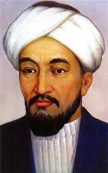
Әбунасыр Фараби
870-950жж
Әбунасыр Әл-Фараби 870-950жж
Ол Отырарда туған. Фараби түркі, араб, парсы, грек және басқа тілдерді жетік білген. Кейбір деректер бойынша тіпті ол 70 тіл білген деп те айтады. Фарабидің энциклопедиясында математика ғылымдарына көп орын берілген. Ол математиканы үлкен-үлкен жеті тарауға бөлегн. Енді әрқайсысына жеке-жеке тоқталайық. Арифметика, яғни сан туралы ғылым. Математиканың бұл тарауы жөнінде Фараби былай дейді: «Арифметика екі ғылымды біріктіреді: біріншісі – практикалық арифметика; екіншісі – теориялық арифметика». Фараби, сөйтіп, арифметиканы практикалық және теориялық арифметика деп екіге бөлінеді. Ол, әсіресе, теориялық арифметикаға ерекше мән береді.
Арифметиканың негізгі ұғымы сан. Фарабидің түсіндірілуі бойынша, сан объективті ақиқат нәрселердің сезіп-түйсінуге болатын, яғни «көзбен көріп, қолмен ұстауға» болатын жақтарын елеусіз қалдырып, тек саналуға, есептелуге тиісті қырларын бейнелейді. Бұл өте дұрыс материалистік түсінік. Фарабидің айтуынша теориялық арифметика үш тарауды қамтиды: 1) сандардың бір-біріне қатыссыз жеке-дара қасиеттерін қарастыратын тарау (жұп және тақ сандар, кемел, жазық, т.б. сандар теориясы); 2) сандардың бір-біріне қатысты қасиеттерін қарастыратын тарау (теңдігі, теңсіздігі, қатынасы, пропорция, өзара жай сандар, еселі сандар, т.б.); 3) сандарға амалдар қолдану. Геометрия ғылымның мазмұны мен пәнін ғылым төмендегіше тұжырымдайды: «Геометрия екі ғылымды біріктіреді: біріншісі – практикалық геометрия, екіншісі – теориялық геометрия». Практикалық геометрия сызықтар мен беттерді ағаш ұстасы, темірші, тас қалаушы, жер бетінде қарастырады. Теориялық геометрия сызықтары мен жазықтықтарды абсалют мағынада барлық денелерге ортақ мағынада қарастырылады.
-
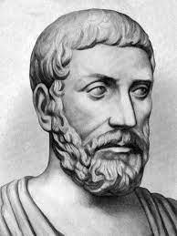
Пифагор
Б.э.д. 569 – 475ж
Пифагор Б.э.д. 569 – 475ж
Грек ғалымы Пифагор матиматикаға негізделетін құпия ілімнің негізін қалады. Ол сандардың барлық нәрсе екенін және математиканың көмегімен кез келген құбылысты түсіндіруге болатынын дәлелдеген. Мысалы, ол музыкалық аспаптың табиғи көлемінің жартысына тең музыкалық ішек кесіндісінің бір октаваға жоғары дыбыс шығаруға мүмкіндік туғызатынын ашқан. Пифагор жердің шар тәріздес екенін бірінші ұққан және дұрыс ұшбұрыштардың әйгілі теоремасын дәлелдеген. Ол сондай-ақ нысанын өзгеруге сенген және тамаққа бұршақтарды салуға тыйым салған. Пифагор сандары – натурал сандар үштігі, бұл сандар ұшбұрыш қабырғаларының ұзындығына пропорционал (немесе тең) болса, онда ұшбұрыш тіктөртбұрышты болып табылады. Бұл үшін Пифагордың кері теоремасы бойынша ол сандардың x² + y² = z² түріндегі диофант теңдеуін қанағаттандыруы жеткілікті (мыс., x = 3, y = 4, z = 5) өзара жай Пифагор сандарының кез келген үштігі мына формулалар арқылы анықталады: x² = m² - n², y = 2mn, z = m² + n², мұндағы m және n – бүтін сандар (m > n > 0).
-
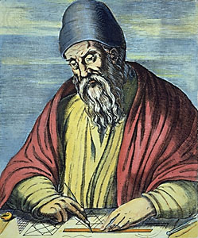
Евклид
Б.д.д. 325 – 265ж
Евклид Б.д.д. 325 – 265ж
Евклид ежелгі дәуірдегі грек математикгі. Ол математикадан жазылған теориялық алғашқы трактаттың авторы, Александрия қарамағындағы мектептің тұңғыш математигі. Оның өмірі жайлы деректер жоқтың қасы. Евклидтің басты еңбегі – «Негіздер». Онда планиметрияның, стреометрияның кейбір мәселелері талданған. Сөйтіп, ол өзінен бқрынғы грек математикасының одан әрі дамуының ірге тасын қалаған. Евклидтің «Негіздерден» басқа «Фигураны бөлу туралы», «Канустың қималары» деп аталатын еңбектері бар. Ол астраномиядан, музыкадан, т.б. салалардан да еңбектер жазған. Евклидтің бізге жеткен шығармалары мына басылымда жинақталған: «Eudidis Opera Menge». Онда грекше түр нұсқасы, латыннан аудармасы және кейінгі авторлардың түсініктемелері берілген. Евклид «Негіздерінің» математиканы дамытуда әсері орасан зор болады. Бұл еңбектен тәлім алмаған ірім-ұсақты математик жоқ деуге болады. «Негіздер» орыс тілінде тұңғыш рет 1739 жылы аударылып басталып шықты, ал ең кейінгі жаңартылған аудармасы 1948-1950 жылдары жарық көрді. Математиканы сүйетін әрбір талапкердің ғылымының классикалық бұл еңбегімен танысып аса пайдалы болар еді.
-
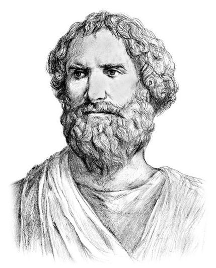
Архимед
Б.д.д. 287 – 212 жж
Архимед Б.д.д. 287 – 212 жж
Гидростатика принципін ашқан Архимед шомылып жатқан жерінен тыр жалаңаш атып шығып, сол күйінде: «Эврика»-деп айқайлап, көне аралап жүгірмемен белгілі. Аса көрнекті грек математигі болған ол П санының 3 ондық бегісін, сфера бетінің көлемі мен ауданын есептеп шығарып, қару ойлап тапқан, тұтқалар мен блоктардың принципін түсіндірген. Ол: «Маған ұзын тұтқа мен тіреу нүктесін беріңдерші, сонда мен Жерді орнынан жылжытамын»,-деген.
-
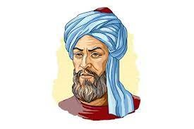
Әл – Хорезми
Б.д.д. 287 – 212 жж
Әл – Хорезми 780 – 850жж
Араб математигі әл – Хорезми Бағдатта тұрды. Математика бойынша ол жазған екі кітап бүкіл әлемге араб цифрлары мен нөлдің тарауына септігін тигізді. «Арифметика» және «Алгоритм» терминдері сол жасаған сөздіктерден бізге келді, ал алгебра сөзі оның «Хибас әл – жабр уа-л мукабаля» кітабы тақырыбының бір бөлігі болып табылады. Ал геогрф ретінде сол кездегі белгілі әлемнің толық картасын жасауға көмектесті.
-
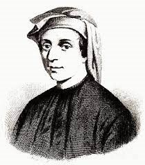
Фибоначчи
Б.д.д. 287 – 212 жж
Фибоначчи 1170 – 1250 жж
Леонардо Пизанский өзінің Фибоначчи есімімен көбірек танымал. Иналияндық саяхатшы – саудагердің ұлы болған ол өзінің өмірінің көп жылдарын Алжирде өткізді, арабтар оны араб сандарын пайдалануға үйретті. Осы сандарды оңай қосуға болатынына таңданған Фибоначчи көп ұзамай осы амалдар туралы кітап жазады, соның нәтижесінде бұларды Италияда да пайдалана бастайды. Ол сондай-ақ Фибоначчидің сандық тізбегін ойлап тапты, тізбек табиғатпен және алтынның арасалмағымен байланысты.
-
 Г.Галилей
1564 – 1642 жж
Г.Галилей
1564 – 1642 жж
Г.Галилей 1564 – 1642 жж
Галилей Галелео (15.2.1564, Италия, Пиза - 8.1.1642, Флоренция маңындағы Арчетри қ) – италиялық физик, механик, астраном, табиған тану ғылымдарының негізін салушы. Кедейленген ақсүйек отбасында туған. Әкесі Винисицо белгілі музыкант болған. Галилейдің үлкен оқымысты болуына әкесінің ықпалы тиген. 11 жасына дейін Пиза қаласында тұрып, кейін отбасы Флоренцияға көшеді. 1581 жылы Пиза университетіне түсіп, медицинаны оқып үйренеді. Мұнда ол Аристотель, Евклид, Архимед еңбектерімен танысады. Сөйтіп, геометрия мен механикаға әуестенген Галилео медицинаны тастайды. Кейін Флоренцияға қайта оралып, төрт жыл бойы математиканы зерттейді. 1589 жылы Пизада математика кфедрасын қабылдап алып, ғылыми жұмысы одан әрі жалғастырылады. Аристотельге қарсы «Қозғалыс туралы сұхбат» деген еңбек жазады. 1592 жылы Падуяда математика кафедрасын басқарады. Бұл кезең (1592 – 1610 жж). Галилейдің шығармаларының кемеліне келген шағы болатын.
-
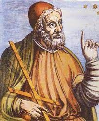
Птолемей
100-170 жж
Птолемей 100-170 жж
Клавдий Птолемейдің өмір жолы туралы мағұлмат жоқтың қасы, тек қана біздің заманымыздың 120 жылынан бастап Александрияда өмір сүргені белгілі. Ол өзінің жетістіктері негізінде арабтар «Алмагест» деп атап кеткен. Үлкен еңбектің авторы «Алмагест» арабша «алмаджести», яғни «аса ұлы» шығарма дегенді білдіреді. Птолемейдің бірінші кітабында гректердің триогеометриясы жүйелі түрде баяндалған. Мұнда 0º бастап 180º дейінгі хордалардың таблицалары келтірілген. Тарихи жазбалар бойынша хордалар таблицасын алғаш жасаушы ретінде б.з.д. 2 ғасырда өмір сүрген астраном математик Гипарх екен. Бірақ ол таблицалар бізге жеткен жоқ. Грек математиктерінде бұл кезде синус, косинус және тангенс сызықтары болмаған. Бұлардың радиусы тұрақты дөңгелектің центрлік бұрыштарына сәйкес келетін хордалардың ұзындығын есептейді. Птолемей дөңгелек шеңбердің 360º, ал оның диаметрін 120 бөлікке бөледі, сөйтіп, хорданың ұзындығын дөңгелектің радиусы (орнықты) арқылы өрнектейді. Басқа бұрыштарға қандай хордалар сәйкес келетінін анықтауға Птолемей шеңберді іштей сызылған төртбұрыш дөңгелекке іштей сызылса, онда оның диогональдарының көбейтіндісі қарама – қарсы қабырғалардың көбейтінділерінің қосындысына тең болады. Бұл теорема қазір Птолемейдің есімімен аталып жүр.
-
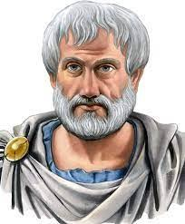
Аристотель
Б. з. д. 384-322 жж
Аристотель Б. з. д. 384-322 жж
Бұл кісінің есімі халық арасында бұрыннан-ақ белгілі. Абайдың «Ескендір» поэмасындағы қанқұйлы, дүлей күш Ескендірді тоқтатқан Аристотель асқар таудай ақыл иесі ретінде танылады. Шынында Аристотельдің барлық халықтар, барлық ұрпақтар тарапынан ерекше баға алып, қошеметке бөленуі тегін емес. Ол өз заманында адам баласына керек білімнің барлық салалары бойынша қалам тартып, керемет ғылыми тұжырымдар жасаған. Авторлардың біреуі Аристотель 400 кітап жазған десе, енді біреулері 1000 кітап жазған деседі. Аристотель шәкірттеріне бақ ішінде серуен құрып жүріп, сабақты әңгіме түрінде жүргізеді екен. Аристотельдің сабақтары таңертеңгілік және кешкілік болып екіге бөлінетін болған. Таңертеңгі ігңмелерге Аристотель тек дараны мен дайындығы мол шәкірттерді ғана қатыстырып, оларға логиканы, филасофияның қиын мәселелерінен хабар беріп отырған. Ал кешкі әңгімелер көпшілік шәкірттерге арналып, мұнда шешендік өнері, саясат сияқты ұғымға жеңіл сауалдарға жауаптар берілген. Аристотельдің логикасы математиканың дамуына күшті ықпал жасады, ол геометрияда дедуктивтік логикалық әдістің қалыптасуына әкеледі. Қазіргі математикалық құрылыстың негізгі ірге тасы саналатын аксиома, анықталса, теорема, дәлелдеу делетіндер. Аристотельдің логикасы негізінде жасалған.
-
 Леонард Эйлер
1707-1783 жж
Леонард Эйлер
1707-1783 жж
Леонард Эйлер 1707-1783 жж
Эйлер (Эйлер) Леонхард (1707-1783), математик, механик, физик және астроном. Швейцариялық шыққан. 1726 жылы Петербург Ғылым академиясына шақырылып, 1727 жылы Ресейге қоныс аударады. Ол адъюнкт (1726), ал 1731-1741 және 1766 жылдан Санкт-Петербург Ғылым академиясының академигі (1742-1766 жж. шетелдік құрметті мүшесі) болды. 1741-1766 жылдары Берлинде жұмыс істеді, Берлин Ғылым академиясының мүшесі. Эйлер - қызығушылықтары мен шығармашылық өнімділігі ерекше кең ғалым. Авторы St. Ғылымның дамуына елеулі әсер еткен математикалық талдау, дифференциалдық геометрия, сандар теориясы, жуық есептеулер, аспан механикасы , математикалық физика, оптика, баллистика, кеме жасау, музыка теориясы және т.б. бойынша 800 еңбегі бар.
-
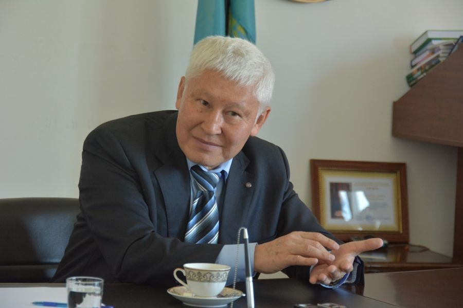
Асқар Жұмаділдаев
1956 жж
Асқар Жұмаділдаев 1956 жж
Асқар Жұмаділдаев – әйгілі академик, математик. 1956 жылы Қызылорда облысы, Шиелі ауданы, Шиелі ауылында туған. 1962 жылы №299 темiржол төртжылдық бастауыш мектебiне, 1966-69 жылдары №45 Октябрьдiң 14 жылдығы атындағы қазақ орта мектебiнде оқыған. 1970-72 жылдары Алматыдағы №56 Сатпаев атындағы физика-математика мектеп-интернатында оқыды. 1980–90 жылдары Математика және механика институтында (қазіргі Математика институты) кіші, аға, жетекші ғылым қызметкер болды. 1990 жылдан сол институтта алгебра лабораториясының меңгерушісі. Жұмаділдаевтің негізгі ғылым-зерттеу еңбектері Ли алгебрасының когомология теориясына арналған. Ол оң сипаттамалы Ли алгебрасының когомологиялары мен деформацияларын және олардың қолдануын зерттеген. Векторлық өріс алгебрасының бөлшектенбейтін кеңеюін есептеген. Ассоциативті емес алгебраның тепе-теңдіктерін тапты. Қазақстан президентінің жалақысын тұңғыш болып есептеген математик ұялы телефонды мүлде ұстамайды. Ол «Төрткен» және «Төртқара» алгебрасын ойлап шығарған қазақтың тұңғыш математигі. Асқар Жұмаділдаев Германиядағы Гамбург, Мюнхен, Билефельд университеттерінің профессоры болды. Кэмбридж университетінің жанындағы Ньютон институтында, сондай-ақ, Италиядағы А. Салам атындағы Халықаралық теориялық физика орталығында, Швеция корольдік Ғылым Академиясының Миттаг-Леффлер атындағы Математика институтында, Канададағы Фильдс атындағы Математика институтында қызмет атқарып, дәріс оқыған.
-
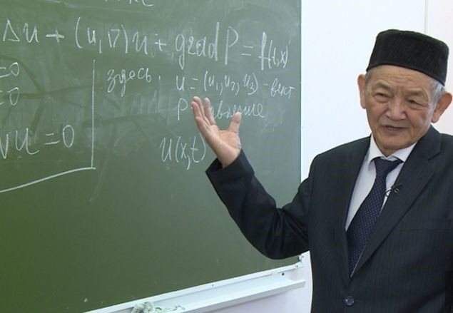
Мұхтарбай Өтелбаев
1942 жж
Мұхтарбай Өтелбаев 1942 жж
Мұхтарбай Өтелбаев – әйгілі академик, математик. 1942 жылы Жамбыл облысы, Қордай ауданы, Қаракемер ауылында туған. 1969 Мәскеу мемлекеттік университетін бітірген. 1973–2000 жылдары Қазақстан Ғылым Академиясы Қазақстан Ғылым Академиясының Математика және механика ғылым-зертттеу институтында, ҚазҰУ-да, Жамбыл педагогикалық институтында, Қарағандыдағы Қолданбалы математика ғылымының зерттеу институтында, ҚазҰПУ-да ғылыми-зерттеу жұмыстарымен айналысып, басшылық қызметтер атқарды. 1993–1995 жылдары ҚР Министрлігі Кабинет жанындағы Ұлттық аэроғарыш агенттігінің аэрогидродинамика бөлімінің бастығы болған. 2000 жылдан бастап Л. Гумилев атындағы Еуразия Ұлттық университеті Еуразиялық математика институтының директоры, Мәскеу мемлекеттік университетінің Қазақстандағы бөлімшесі директорының орынбасары қызметін атқарады. Мұхтарбай Өтелбаев 35 жыл бойы «мыңжылдықтың 7 есебiнiң» бiреуi – Новье-Стокс теңдеуiн шешумен айналысып, 2014 жылы осы есептің жауабын тапқан.
-
 Уалбай Өмірбаев
1960 жж
Уалбай Өмірбаев
1960 жж
Уалбай Өмірбаев 1960 жж
Уалбай Өмірбаев – атақты математик. 1960 жылы Оңтүстік Қазақстан облысы, Ордабасы ауданы, Төрткүл ауылында дүниеге келген. 1986-1989 жылдар аралығында әл-Фараби атындағы ҚазҰУ-дың жоғары алгебра кафедрасының ассистенті болып бастаған. 1989-1991 жылдары ҚазҰУ-дың аға оқытушысы, 1991-1995 жылдары доценті атанған. 1995 жылы ғылым докторы дәрежесіне қол жеткізген. 1995-2001 жылдары М.Әуезов атындағы Оңтүстік Қазақстан мемлекеттік университетіндегі информатика кафедрасының меңгерушісі болған. 2001 жылдан бастап ЕҰУ-да алгебра және геометрия кафедрасының меңгерушісі қызметін атқарып жүр. 2007 жылдан бері Детройттағы Уейн университетінде сабақ береді. 2001 жылы 30 жыл бойы шешілмеген жапон математигі М.Нагатаның, 2004 жылы ағылшын математигі П.Конның есебін шешкен.
-
Назарбай Қыдырұлы Білиев
1935 жж
Назарбай Қыдырұлы Білиев 1935 жж
Назарбай Қыдырұлы Білиев 1935 жылы 15 қыркүйекте Ақтөбе облысы Байғанин ауданы Жарқамыс ауылында дүниеге келген. 1957 жылы ҚазМУ-ды, 1963 жылы КСРО ҒА-ның Математика институтының аспирантурасын тәмамдаған. Ғалым, физика-математика ғылымдарының докторы (1980), профессор (1985), Қазақстан ҒА-ның коррпоратив мүшесі (1989). 1957-1960 жылдары Гурьев (қазіргі Атырау) педагогика институтында оқытушы, аға оқытушы болды. 1963-1965 жылдары Қазақстан ҒА-ның Математика және механика секторында жұмыс істеді. 1965-1988 жылдары Қазақстан ҒА-ның Математика және механика институтында кіші, аға ғылыми қызметкер, лаборатория меңгерушісі болды. 1988 жылдан Теориялық және қолданбалы математика институтының директоры, сонымен қатар 1999 жылдан ҚР ҒА-ның Физика-математика ғылымдары бөлімшесінің академик-хатшысы. Негізгі ғылыми еңбектері функция және функционалдық теория тәсілдерін дербес туындылы дифференциалдық теңдеулерге қолдану саласына, комплекс айнымалы функциялар теориясына арналған. Ол Никольский — Бесов кеңістігіндегі жалпыланған аналитикалық функциялар теориясын одан әрі дамытып, оның анализде, геометрияда және механикада қолдану аясын кеңейтті.
-
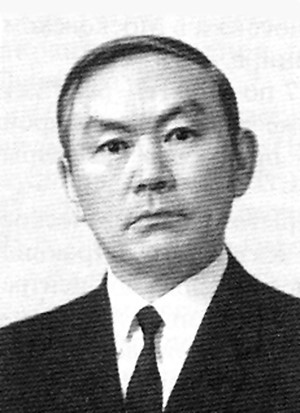
Жәутіков Орынбек Ахметбекұлы
1911-1989 жж
Жәутіков Орынбек Ахметбекұлы 1911-1989 жж
Жәутіков Орынбек Ахметбекұлы (1911-1989) - ғалым, физика-математика ғылымдарының докторы, профессор, Қазақстан Ғылым академиясының академигі, Қазақстанның еңбек сіңірген ғылыми және техника қайраткері, Қазақстанның Мемлекеттік сыйлығының лауреаты.Қарағанды облысы Ақтоғай ауданында дүниеге келген. 1920-1930 жылдары ауылдық мектепте, кейіннен Қарқаралы қаласындағы мектепте оқыған. 1934 жылы Қазақ педагогикалық институтының (Абай атындағы Қазақ Ұлттық педагогикалық университеті) физика-математика факультетін үздік бітіріп, Ленинград мемлекеттік университетінің (Санкт-Петербор мемлекеттік университеті) аспирантурасын тамамдаған. 1934-1951 жылдар аралығында Қазақ педагогикалық институтында ассисент, аға оқытушы, доцент, декан, директордың ғылыми жұмыстар жөніндегі орынбасары, кафедра меңгерушісі болған. 1945 жылы Қазақ КСР Ғылым академиясында Математика және механика секторы ашылып, кейіннен Математика және механика институты құрылған. О.Жәутіков 1945-1965 жылдар аралығында Қазақстан Ғылым академиясының Математика және механика секторында аға ғылыми қызметкер, сектор меңгерушісі, 1965-1969 жылдар аралығында Қазақстан Ғылым академиясының Математика және механика институтының директорының орынбасары, зертхана меңгерушісі, 1969-1989 жылдар аралығында Қазақстан Ғылым академиясы Президиумының мүшесі, Физика-математика ғылымдары бөлімшесінің академик-хатшысы қызметтерін атқарған. 1985-1989 жылдары Қазақстан Ғылым академиясының Математика және механика институтында зертхана меңгерушісі болған. Негізгі ғылыми еңбектері қозғалыстың орнықтылық теориясына, математика, физика теңдеулеріне, дифференциалдық теңдеулердің шексіз жүйелеріне, теориялық және қолданбалы механикаға, математика тарихы мен оның методологиясына арналған.